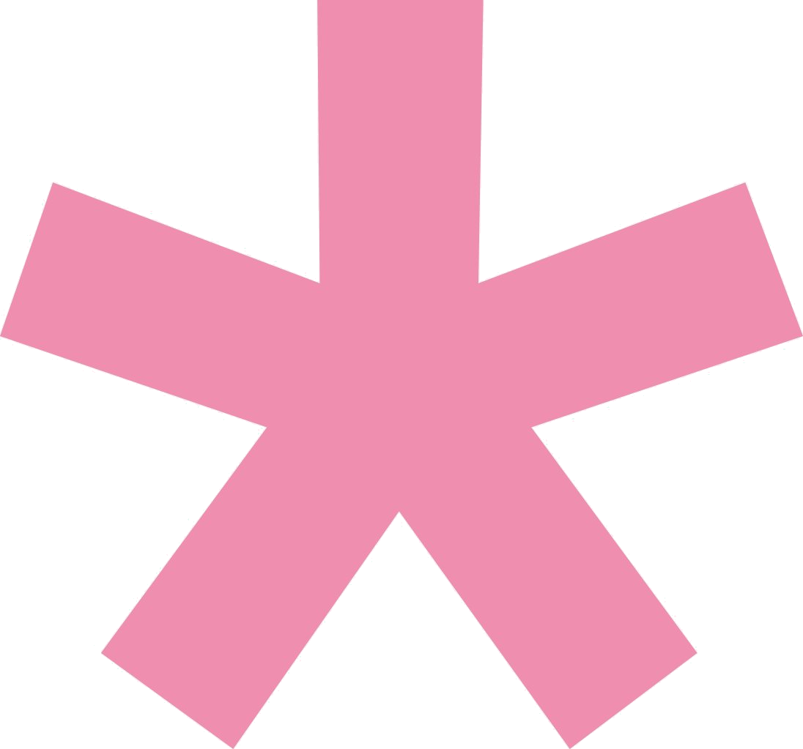

02.We say stop
Programs used:
After effects
After effects
2024

02.Animate static posters into looping videos for a university campaign against pick-up artists, Bringing variable text, illustrations, and textures to life in After Effects, with characters animated through the puppet tool and code expressions controlling font variability. The plugin Overlord was used for the transfer between Ai and Ae.
Create an animation for RAI exploring the legacy of Milan's Studio di Fonologia. Telling the stories of its most iconic instruments through sound and visuals, where every frame of the animations reflects the ways these machines transformed sound. This was a celebratory video commissioned for the Studio’s 70 years.
Create an introductory video for Design Philology, an archive dedicated to the history of design education and research at Politecnico di Milano. The video follows an established visual identity and a specific professional aesthetic, weaving together illustrations, typography, through 3D camera in After Effects.
Complete 3 animations to get the certification from the course Motion Secrets, an advanced After Effects course by motion designer Emanuele Colombo: mastering fluid movement, anticipation, follow-through, and morphing across three animation formats: one commercial, one shape based, and one being a full character animation.